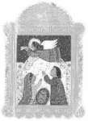

| Un phare dans l'obscurité |
Un dessin offert à Maître par les adolescents chinois du Centre de Détention de Portland |
Dans le nø 106 de la revue du Maître Suprême Ching Hai, j'ai raconté que plusieurs adolescents chinois qui étaient détenus dans le Centre de Détention pour Jeunes de Portland avaient commencé à suivre Maître en continuant leur pratique spirituelle. Cette histoire a connu une conclusion provisoire puisque tous ces jeunes gens ont été ensuite relâchés et ont quitté Portland pour des destinations diverses.
Pendant plusieurs mois j'ai travaillé pour le Centre de Détention, en m'occupant de huit adolescents chinois âgés de quatorze à dix-huit ans. Sept d'entre eux ont appris la Méthode pratique. Un d'entre eux était chrétien et a connu une lutte intérieure intense avant d'exprimer, deux mois après, le désir de suivre la Méthode car il a vu que ses amis jouissaient de très bonnes expériences intérieures et extérieures. Avant de partir, il avait aussi collectionné de nombreux magazines de Maître pour les donner à d'autres personnes. C'est ce qui m'a le plus ravie et réconfortée durant le temps que j'ai passé avec eux.
En décembre 1999, les événements avaient pris une tournure dramatique. Durant une période de cinq jours consécutifs, le journal de Portland The Oregonian a publié beaucoup d'articles dont les grands titres étaient consacrés à une des jeunes filles nommée Wang. Supportée ouvertement par des avocats, des journalistes, des stations de radio et de télévision, son histoire a déclenché une dynamique de réponses de la part du grand public. Beaucoup de gens ont exprimé leur sympathie et ont fait des dons et des cadeaux a six des adolescents détenus. Même des sénateurs et des membres du Congrès se sont ralliés à leur cause. Wang était devenue le centre d'intérêt des nouvelles histoires au sujet des réfugiés chinois. Il faut rappeler que le gouvernement chinois impose un programme de planning familial qui permet d'avoir seulement un enfant, soit une fille ou un garçon dans chaque famille. Wang est la troisième fille d'une famille de fermiers, et était donc privée d'un statut légal selon la loi chinoise. On lui refusait donc des allocations pour son éducation, son père avait été condamné à une amende et sa mère avait été stérilisée de force. Seule et sans bagages, Wang est partie en bateau au départ de la province de Fujian pour l'Amérique avec plus de cent personnes dans l'espoir d'y recommencer une nouvelle vie. Malheureusement, le bateau fit naufrage et échoua dans l'île de Guam. Wang a été par conséquent expédiée au Centre de Détention pour Jeunes de Portland où elle est restée pendant un certain temps.
Quelques jours après que cette histoire, au sujet des adolescents chinois, ait été rendue publique, le Service d'Immigration a décidé de relâcher Wang et cinq autres adolescents. Ces jeunes gens m'ont dit que depuis que les médias parlaient de leur histoire et qu'ils avaient appris leur imminente libération, ils étaient si heureux qu'ils pouvaient difficilement trouver le sommeil ou même manger leur petit déjeuner.
Je trouve que cette histoire est vraiment tragique. A cause de ces jeunes réfugiés, le Service d'Immigration a en quelque sorte changé ses méthodes bureaucratiques, ce qui peut être aussi bénéfique aux réfugiés des autres pays. Les incroyables arrangements de Dieu sont vraiment stupéfiants ! Les deux autres adolescents qui voulaient devenir initiés ont été rapatriés en Chine car ils n'avaient pas de raisons suffisantes pour rester aux Etats-Unis. Bien que je sache que Dieu met toujours au point les meilleurs arrangements, je me sentais concernée qu'ils ne puissent pas accepter cette issue finale. Je ne pouvais que leur rappeler de se souvenir de Dieu et de Maître, et de garder à l'esprit que chaque arrangement est pour le mieux. Peu importe la situation, le destin et les différents karmas de chaque personne : nous sommes tous des instruments de Maître, capables de rendre service aux gens, où que nous soyons.
<Lettres de la prison>
Chère Maître Ching Hai,
Je suis si heureux d'avoir reçu vos bénédictions et votre aide. Cela fait plus de six mois que je médite selon la Méthode pratique, j'ai eu quelques expériences qui m'ont données le courage d'affronter chaque jour le centre de détention. Maintenant, je quitte le centre, mais je continuerai à étudier Vos enseignements. J'aimerais vous remercier encore une fois, Maître Suprême Ching Hai.
Que vous demeuriez à jamais jeune et énergique !
Hwang
Le 17 décembre 1999
Chère Maître Ching Hai,
Je vous suis très reconnaissant du soutien et de l'aide que vous m'avez apportés ces derniers mois. Je médite selon la Méthode pratique depuis huit mois et j'ai eu plusieurs bonnes expériences. J'espère que plus de gens recevront Vos enseignements et Votre aide à l'avenir.
Que nous ayons la paix sur Terre très bientôt !
Chen